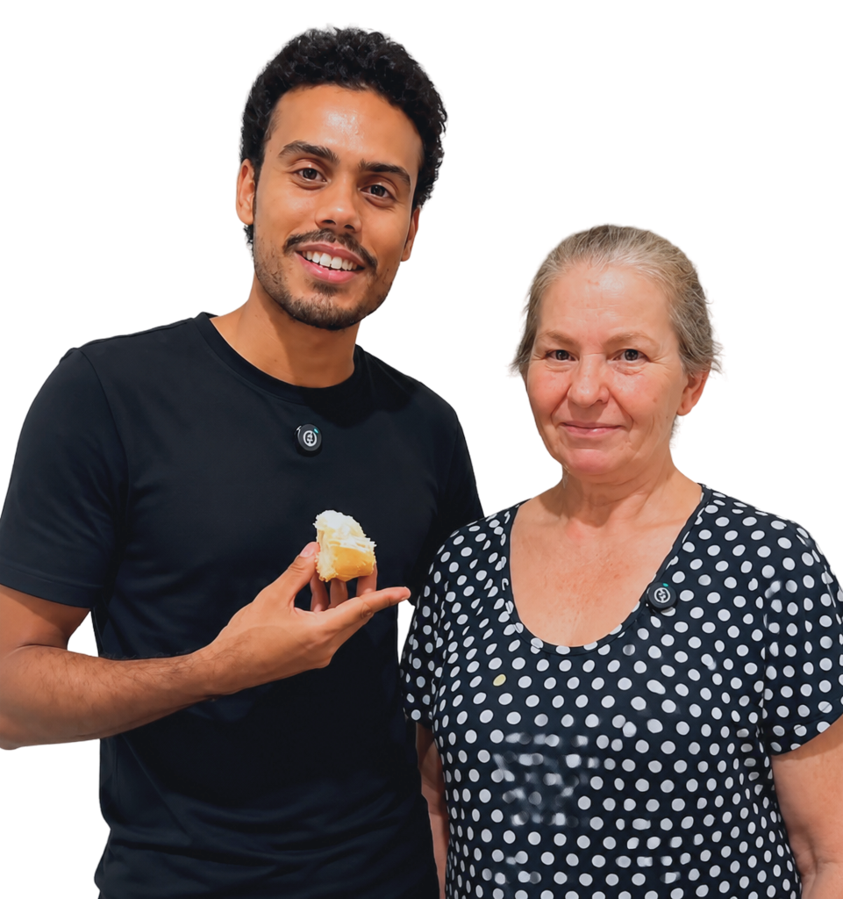
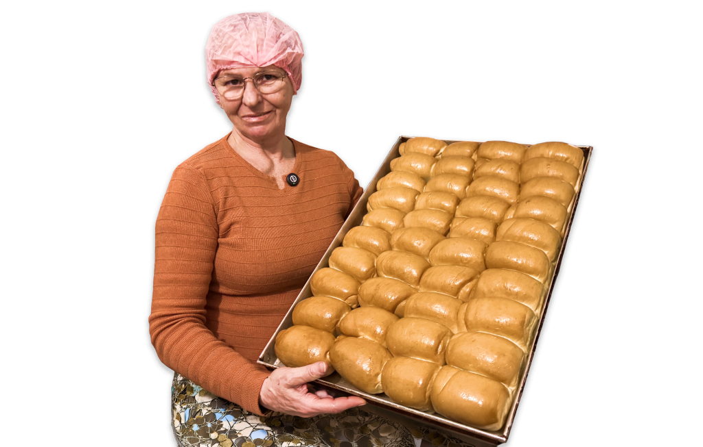
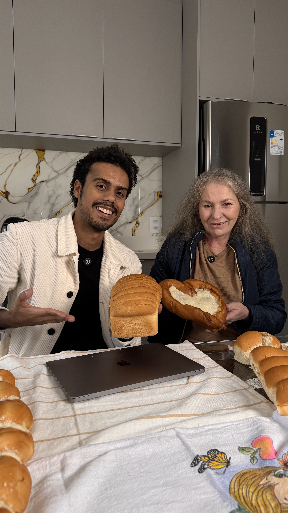

Negócios entre GERAÇÕES
Parceria entre gerações traz escala para negócios familiares e alcança comunidade digital

Pequenos negócios enfrentam um desafio recorrente: o conhecimento e a experiência nem sempre acompanham as mudanças no comportamento do consumidor.
Receitas consolidadas e clientela fiel garantem a qualidade do produto. Mas as redes sociais e a produção de conteúdo ampliam o alcance do negócio.
Segundo Igor Chohfi, especialista em desenvolvimento organizacional e cofundador da Rede Pavim, o principal benefício de reunir diferentes gerações está na diversidade de perspectivas.
"Essa diversidade de pensamento traz muitos pontos positivos para qualquer negócio. O desafio é conciliar novas ideias com aquilo que já funciona", explica Chohfi.

O que cada geração costuma trazer para o negócio
Gerações mais experientes
- Conhecimento técnico
- Visão de longo prazo
- Inteligência emocional
- Relacionamento com clientes
Gerações mais JOVENS
- Domínio das redes sociais
- Agilidade para testar novas ideias
- Conhecimento digital
- Capacidade de adaptação

Quando décadas de cozinha encontra as redes sociais
Maria Madalena Alves de Souza, de 61 anos, trabalha com panificação há mais de quatro décadas. Com a experiência adquirida com seu falecido esposo, retomou a produção com a Pão e Prosperidade há dois anos de forma artesanal.
O negócio atende consumidores da região de São Paulo (SP) e vende entre 800 e mil pães por dia. O alcance mudou quando o genro, Thalles de Azevedo Pereira, de 27 anos, decidiu registrar a rotina da sogra.
Especialista em marketing digital, Thalles identificou um ativo que passava despercebido: a experiência acumulada por Madalena. Os primeiros vídeos mostram conversas, receitas e bastidores da produção.
Sem roteiros e com gravações feitas pelo celular, o perfil está próximo dos 10 mil seguidores em 23 dias. Um dos vídeos alcançou mais de 500 mil visualizações.
Com a venda sendo restrita à região, Thalles teve a ideia de disponibilizar um curso para as pessoas que moram longe aprenderem com a tradição de décadas da sogra.
Hoje, a comunidade reúne consumidores, padeiros e pessoas interessadas nas técnicas desenvolvidas por Madalena ao longo da carreira.
"Cada geração enxerga o mundo de uma forma diferente. O desafio é conciliar novas ideias com aquilo que já funciona."
Confiança e transparência no dia a dia
A relação entre Madalena e Thalles segue uma divisão clara. Madalena faz a produção, é responsável pelas receitas e pelo conteúdo técnico. Thalles foca as divulgações on-line e cuida da estratégia digital e dos cursos. "O negócio já existia. Eu estou agregando novas formas de distribuir esse conhecimento", afirma ele.
Para Igor Chohfi, essa definição de responsabilidades reduz conflitos e torna a tomada de decisão mais eficiente. O especialista utiliza o conceito de "guardião da área" para que cada pessoa assuma a liderança sobre uma frente específica do negócio.
As divergências entre gerações costumam surgir quando as responsabilidades se sobrepõem. Sem acordos claros, a discussão sai do campo profissional e migra para o pessoal. Igor Chohfi recomenda criar rituais de alinhamento, registrar decisões e definir metas compartilhadas.
Cinco acordos para quem empreende:
- 1Definir quem decide cada assunto
- 2Registrar responsabilidades
- 3Estabelecer metas em comum
- 4Reuniões periódicas de alinhamento
- 5Acompanhar indicadores do negócio


Comunidade local e digital
A audiência criada por Madalena e Thalles se conecta com receitas, mas permanece pela história e pela forma como o conhecimento é compartilhado. Dados levantados pelos empreendedores mostram que 82% da audiência do Pão e Prosperidade é formado por mulheres. As faixas etárias mais representativas estão entre os 35 e 54 anos.
A presença digital abriu novas frentes, incluindo cursos on-line e uma comunidade própria no WhatsApp. O conhecimento, que antes alcançava clientes de uma região, passou a chegar a pessoas de diferentes partes do país e até do exterior.

Como conciliar trabalho com divergências de opiniões?
Igor Chohfi alerta para um erro frequente: considerar o vínculo e o interesse no projeto suficientes para garantir uma parceria profissional. Cada integrante precisa desenvolver competências compatíveis com a função que ocupa.
Para Thalles, o segredo é entender que a relação entre ambos sempre vem antes de qualquer negócio e que a conversa transparente é rotina do dia a dia de trabalho.
Madalena segue compartilhando seus conhecimentos enquanto Thalles ajusta os materiais de divulgação e estuda a oferta de novos infoprodutos.
Os dois compartilham a mesma convicção: a experiência construída ao longo de décadas ganha escala quando encontra ferramentas capazes de conectá-la a novos públicos.